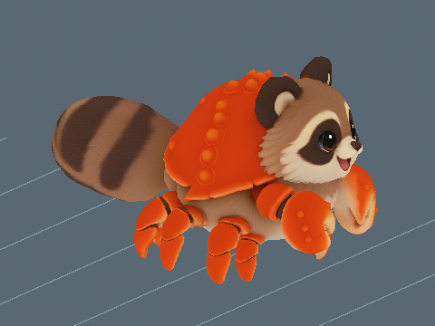

Animation previews, videos and model downloads are retained locally and are not hosted on this website. Text, assessments and still images remain available.
Rainbow Coral Reef / Creature profile
Crabuki
Critically Endangered
Perspective modelling reference · Open image for full size
About Crabuki
A round, masked shore-dweller with a sturdy shell, eight quick legs and two broad pincers. Crabuki shuffles sideways when excited, leaving dotted tracks across the wet sand.
🥊 Heavy hitter: 20% more stick and direct water-bomb damage. Trap damage and guardian knockouts are unchanged.
One active creature total: following or mounted. Choosing another replaces the current creature.
Hatch bonuses
First hatch: +7,500 Swimming XP and $1,000,000 Cash. Later hatches: +750 Swimming XP (10%), with no further discovery Cash.
One first-hatch award per player and species, shared across qualities and sizes. The certificate shows both credited amounts with the skill icon. Fixed amounts are independent of XP boosts. All hatch bonuses
Assigned game stats. The creature, egg shell and named wild egg spawning are integrated.
Animation repair, 31 October 2026: The existing installed body is retained; the repaired joint candidate remains held locally. Idle 5.5, Run 3, Walk 4 (shown previews). Straight contacts improve, but turning still slides. The 16 and 24 studs/s Run cases demand 14.109 and 21.164 cycles/s and remain below quality acceptance. A current Roblox Studio Edit image is recorded on this page. Current GIF/MP4 copies and the repair report are on this creature page. Saved developer votes are unchanged; saving, publication and live acceptance remain separate. Release update, 28 October 2026: the real creature model, animations, intact species egg, Standard artwork, Fine/Superior/Epic/Legendary finishes, transparent actual-shell egg icon and existing transparent creature portrait are registered. Wild eggs are enabled in the assigned biome at ordinary initialization and dawn. Current sizes, mass, rarity, income, nest homes, five-minute player-count allocation and guardian models are retained. Source checks, installed readback and detached Edit egg rolls passed; gameplay, multiplayer, mobile and real storage/rejoin remain pending. Saving and publication remain Daniel-owned. Earlier stage notes: The supplied crab and raccoon-like FBX was imported as Crabuki through the native API on 28 October 2026. Its template and Home preview retain all triangles and all 40 supplied bones plus PetRoot, with the original colour texture. The invalid duplicate colour image in the normal slot is omitted. Skin weights are converted to Roblox four-influence limits. Its eight walking legs use gentle alternating motion; claws and face keep their supplied pose. Edit skinning, resizing and front/side/walking checks passed. The original source is copied into concepts/crabuki/crabuki.fbx. Deployed species catalogue and wild egg integration remain pending. Live deformation and gameplay acceptance remain pending. No manual save or publication was performed. Following animation update, 28 October 2026: idle movement and fitted blinking are installed and verified on the native model under plan 04b25d3ca0534bf09f8f3776dcdddc60. Evidence: output/follower-idle-all. Live following and animation acceptance remain pending.
Parent reference masses: Crab (250.00 g) and Tanuki (6.50 kg). Parent reference sizes: Crab: 0.145 m (carapace length); Tanuki: 0.59 m (head-body length). Pet weight uses the retained species calibration multiplied by relative height and relative front-to-back length. Both dimensions scale together, so individual mass still scales quadratically. Length includes the tail and uses installed model depth normalized to standard height; it is an extent, not a curved body measurement. One stud is exactly 0.28 metres. Low-bodied parents use body length; the other recorded heights and bird body lengths are size proxies. These are game balance references, with range midpoints and explicit estimates rather than measured population means. Pet height is base height times its internal scale, with no four-stud floor or extra quality height bonus. Pet kg uses scale squared. Egg kg is the base creature kg times scale, and base egg dimensions multiply directly by scale. See the scale tables for the quality bands.
A Standard pet at internal scale 1 hatches at 3.15 studs (0.882 m) and 29.44 kg. The base statistics describe catalogue dimensions at scale 1.
Egg
Base height
2.228 studs
Base weight
29.44 kg
The egg and creature share one internal scale. Egg kg is the base creature kg times scale. All base egg dimensions multiply directly by scale, and quality chooses the scale band.
Installed Roblox model
Studio Edit / Idle pose. This is the installed creature in Roblox Studio. Live gameplay acceptance remains separate.
Separate Walk and Run are available. Quality and high-speed/turn acceptance remain scoped to the individual reviews. Current model quality gate is rejected: The rigid pincer classifier also captured coat and support surfaces, producing stretched body boundaries in actual Run. The model and retained references have eight walking legs and two pincers. The earlier six-leg catalogue sentence was a text error and is corrected; the actual eight-leg design is preserved.
Earlier version / At 0 studs/s / 2026-10-31T11:13:44.178604+00:00
At 0 studs/s: The face, shell and separated claw shapes stay readable, with a small head and body movement that keeps the creature alive. The repeated motion is slight and mechanical, without a purposeful pause, clear supported settle or much secondary claw and leg response. It remains below the body polish threshold.
Retained earlier assessment. The current source needs a new review; this number does not approve the changed version.
Offline source skin with current runtime skeletal samples; not a live game capture.
Random facial overlays, blink cosmetics and look-around are omitted.
Earlier version / At 2.1181 studs/s / 2026-10-31T11:13:44.178604+00:00
At 2.1181 studs/s: The face and shell remain stable and the visible walking branches stay recognisable through the slow cycle. At 2.1181 stud/s, the small leg shuffle does not convincingly support the sustained travel. The body appears to glide relative to the ground marks, with little readable loading and recovery in this view.
Retained earlier assessment. The current source needs a new review; this number does not approve the changed version.
Offline source skin with current runtime skeletal samples; not a live game capture.
Random facial overlays, blink cosmetics and look-around are omitted.
Travel uses the existing controller fallback stride; this clip has no fitted stride metadata.
Distance-driven runtime phase at the listed preview travel speed; live gameplay speed may differ. The travelling excerpt resets at the loop boundary.
Earlier version / At 16 studs/s / 2026-10-31T11:13:44.178604+00:00
At 16 studs/s: The tucked posture and larger leg changes distinguish the action from the slower Walk, and the head remains readable. At 16 stud/s the retained short stride repeats about 13.02 cycles/s. The crowded legs flicker and churn beneath a comparatively rigid body, with no convincing weight transfer or readable footfalls. At 50 fps there are fewer than 4 frames per cycle, which also limits contact inspection.
Retained earlier assessment. The current source needs a new review; this number does not approve the changed version.
Offline source skin with current runtime skeletal samples; not a live game capture.
Random facial overlays, blink cosmetics and look-around are omitted.
Distance-driven runtime phase at the listed preview travel speed; live gameplay speed may differ. The travelling excerpt resets at the loop boundary.
Authoring comparisons
Original Walk comparisons are labelled separately from renders of repaired skins. Each records its installation state. Current runtime previews are above.
Walk candidate
Rejected authoring version after native review. Correction is in progress.
Original Walk comparison at Run speed. This media uses the original mesh; the Run candidate shows the repaired skin.
Needs work / At 2.55937 studs/s (0.72 m/s) / 2026-10-30
At 2.559375 studs/s the original shell, face and pincers remain readable, but the little leg shuffles provide little convincing planted backward stroke. The body appears to glide over the markers. This original-skin comparison does not establish repaired-skin Walk contact.
Assessment of this preview at the shown speed. Separate from developer approval.
Historical authoring evidence. Current installed playback and its current reviews are shown above.
Random facial controls, blinking and look-around are omitted.
This gate covers the new full Run at its recorded travel speed. Legacy Walk is retained with its known baseline weaknesses.
Straight Walk/Run playback, speed selection and reset now pass detached Edit checks at three scales. Live turns and gameplay acceptance remain separate.
Later native visual rejection: The rigid pincer classifier also captured coat and support surfaces, producing stretched body boundaries in actual Run.
This original-skin before comparison does not establish acceptance of Walk on the repaired mesh. Its movement speed is the Run comparison speed.
Run candidate
Rejected authoring version after native review. Correction is in progress.
Repaired skin Run candidate at its recorded fitted speed.
Needs work / At 2.55937 studs/s (0.72 m/s) / 2026-10-30
Later settled native review of this same source version exposed stretched coat beside the pincers. This historical authoring view did not establish protected-coat deformation acceptance.
Assessment of this preview at the shown speed. Separate from developer approval.
Historical authoring evidence. Current installed playback and its current reviews are shown above.
Random facial controls, blinking and look-around are omitted.
This gate covers the new full Run at its recorded travel speed. Legacy Walk is retained with its known baseline weaknesses.
Straight Walk/Run playback, speed selection and reset now pass detached Edit checks at three scales. Live turns and gameplay acceptance remain separate.
Later native visual rejection: The rigid pincer classifier also captured coat and support surfaces, producing stretched body boundaries in actual Run.
2 November 2026. Patrol: 4 studs/s (1.12 metres/s) at 9.45 studs (2.65 metres) tall. The shown cycle repeats 0.65 times per second.
A deliberate scuttle suits the broad body and overlapping leg supports. The existing small leg strokes are retained.
The existing body-animation scores remain separate. This review assesses patrol speed and cadence; it does not award a replacement animation score.

|
These are offline source-skin previews at the installed guardian scale. Route turns, obstacles, water transitions and multiplayer still need in-game review. Chase and egg-return tuning are unchanged. Existing developer decisions are preserved.
Blink review is pending. Its pass threshold is 7.5/10.
Download every action
Action downloads
Crabuki action files
Action
GIF
MP4
Idle
Walk
Run
Blink
Not recorded
Not recorded
Recorded parent height and weight
These are the exact reference inputs used for this creature. Some are range midpoints or explicit estimates, rather than measured population averages. Height and body length are labelled separately.
Scroll the table sideways on a narrow screen.
Parent inputs and their arithmetic averages. Select a linked value to open its recorded source.
Blue crab maturity reference uses midpoint of the reported 120 to 170 mm carapace range.
Raccoon dog: mean of summer midpoint 5 kg and winter midpoint 8 kg; midpoint of 50 to 68 cm.
(Parent 1 size + Parent 2 size) / 2
How the weight was recorded
Blue crab maturity reference uses midpoint of the reported 120 to 170 mm carapace range.
Raccoon dog: mean of summer midpoint 5 kg and winter midpoint 8 kg; midpoint of 50 to 68 cm.
(Parent 1 kg + Parent 2 kg) / 2
Check the calculation at scale 1
Average parent size
(0.145 + 0.59) / 2 = 0.3675 m
Average parent weight
(0.25 + 6.5) / 2 = 3.375 kg
Chosen game height
3.15 studs x 0.28 = 0.882 m
Parent-derived creature weight
3.375 x (0.882 / 0.3675)^2 = 19.44 kg
Game balance multiplier
1x; 19.44 x 1 = 19.44 kg (historical parent baseline)
Retained height-only calibration
19.44 kg
Length correction
19.44 x 4.77 / 3.15 = 29.437714285714 kg
Catalogue creature weight
29.437714285714 kg
Base egg height, 50/50 blend
1.8 x sqrt((3.15 / 4) x (29.437714285714 / 4)^(1/3)) = 2.227777442142 studs
Matches the recorded averages and catalogue weight.
Game height is chosen for the creature design; it is not the average parent height. Individual pet height and length both multiply by saved scale. Weight uses their product, so uniform scaling remains quadratic. Values above are displayed to twelve decimal places; calculations use the full recorded values.
Scale, egg weight and carrying impact
These ranges use the actual quality bands and shared creature scale. Most rolls are near the midpoint.
Computed ranges at each quality. Carry speed is a percentage of normal movement before other modifiers.
Base rates are per second for a creature placed at Home. Eggs still incubating and creatures in inventory do not earn. Currency starts at $0. Hatched pets placed in your Home garden pay into your wallet every second while you are online. The currency is Cash. Normal income scales with saved size and quality: Standard 1x, Fine 2x, Superior 4x, Epic 8x and Legendary 16x. Followers do not earn garden income; active petting temporarily gives the petted creature 3x. See Game mechanicsXP and skill levels for the full rules. Grim Peeper pets earn $10 per second.
Reviewed
Reviewed means Daniel has reviewed the in-game model and animations and is happy with them.
Daniel tells Codex when he approves how a model looks and works. Codex records Daniel's approval and updates this shared site. Reviewed shows a tick when Daniel is happy with the in-game model and animations.
✗ Not reviewed
Daniel: ✗ Pending
Real model and animations, species egg, four shiny finishes and icons are installed. Assigned-biome wild eggs are enabled. Daniel model/animation approval and live gameplay acceptance remain pending.
Pet icon
The face icon used in the game. Labraduck also represents the Pets menu.
Collection artwork
Full-body artwork and its matching silhouette, prepared at 256 by 256 pixels for the Pets collection.